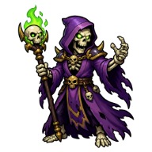
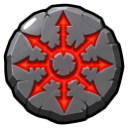
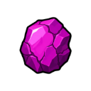
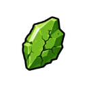
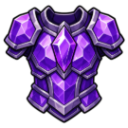
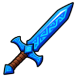
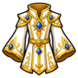
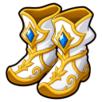

Lich Acolyte
Level 78 · 🏚️ Bleakhaven Ruins
| Property | Value |
|---|---|
| Weakness | 🏹 Ranged |
| Hitpoints | 255 |
| Attack | 70 |
| Strength | 60 |
| Defence | 54 (+85 armour) |
| XP per kill | 1,380 |
| Slayer | 💀 Reaper Joss gives tasks here (Slayer 45, combat 70) |
Drops
| Item | Amount | Chance |
|---|---|---|
| Coins | 800–2,000 | Always |
| Dark Essence | 3–8 | 70% |
 Chaos Rune | 3–8 | 40% |
| Death Rune | 2–5 | 30% |
 Chipped Alchemy Gem | 1 | 1 in 50 |
 Chipped Herbalism Gem | 1 | 1 in 50 |
 Amethyst Platebody | 1 | 1 in 100 |
 Rune Sword | 1 | 1 in 125 |
| Archmage Hat | 1 | 1 in 125 |
 Archmage Robe Top | 1 | 1 in 125 |
| Archmage Robe Bottom | 1 | 1 in 125 |
 Archmage Boots | 1 | 1 in 125 |
| Archmage Gloves | 1 | 1 in 125 |
Needed for
- Diary: Bleakhaven Diary